Historical research baseline · Open the implementation review and playable studies ↗
Water needs a place to belong.
Fresh Wrela captures, production references and real photographs. Compare crest structure, foam memory, shoreline contact and the world reflected in the surface.
Contact, depth and reflected surroundings
Wrela · current · 1920 × 1080
{kind=link}
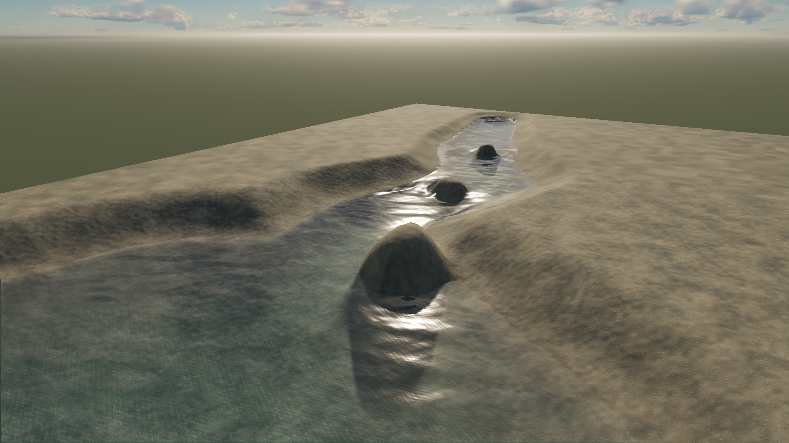
Horizon Forbidden West · impact reference
{kind=link}
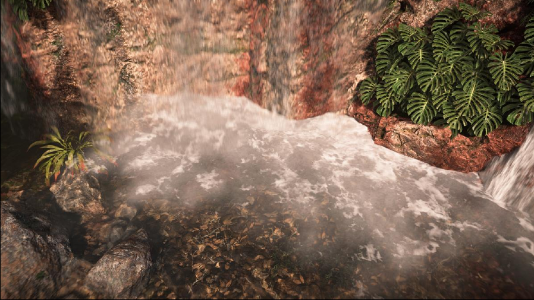
Real photograph · NPS · detail crop
{kind=link}
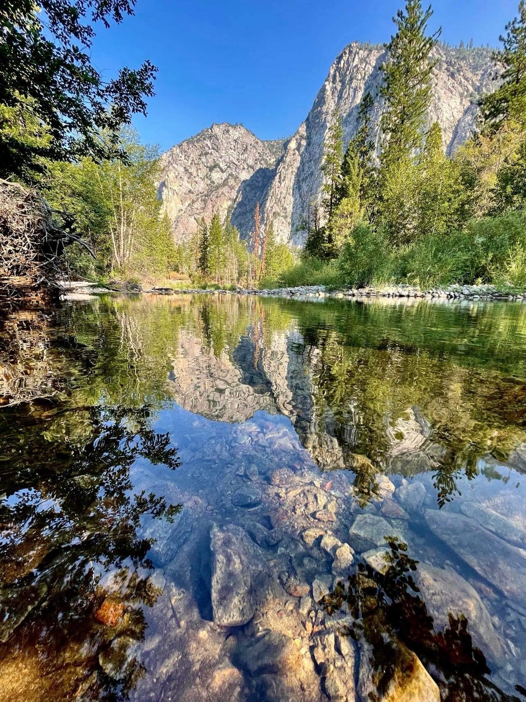
Finish an integrated creek and quiet pool: asymmetric bed geometry, wet banks, local flow detail and a reflection fallback that retains the surrounding landscape.
Qualitative references, not matched cameras, optics or grading. A calmer pool should have much less whitewater than the waterfall reference.
Our diagnostic views remain useful
{kind=link}
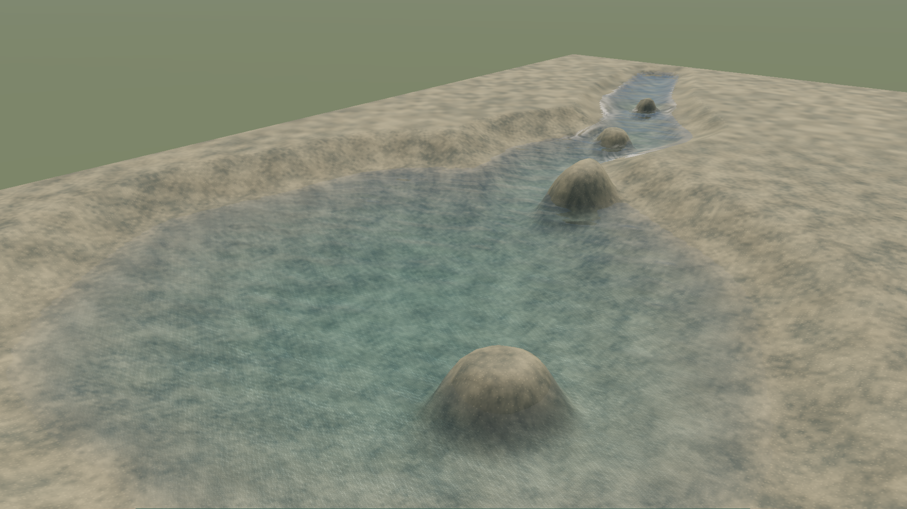
{kind=link}
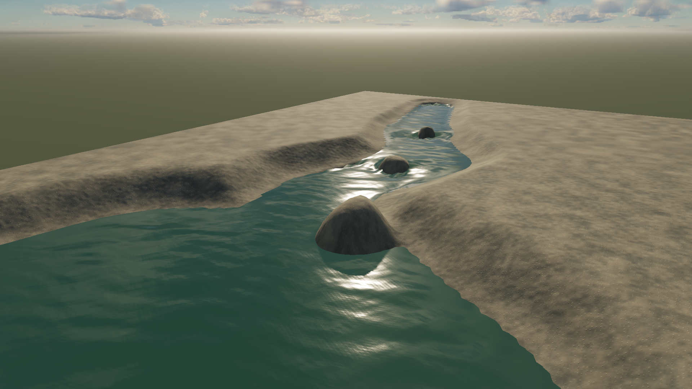
Readable crests need more than fine ripples
Wrela · current daylight
{kind=link}
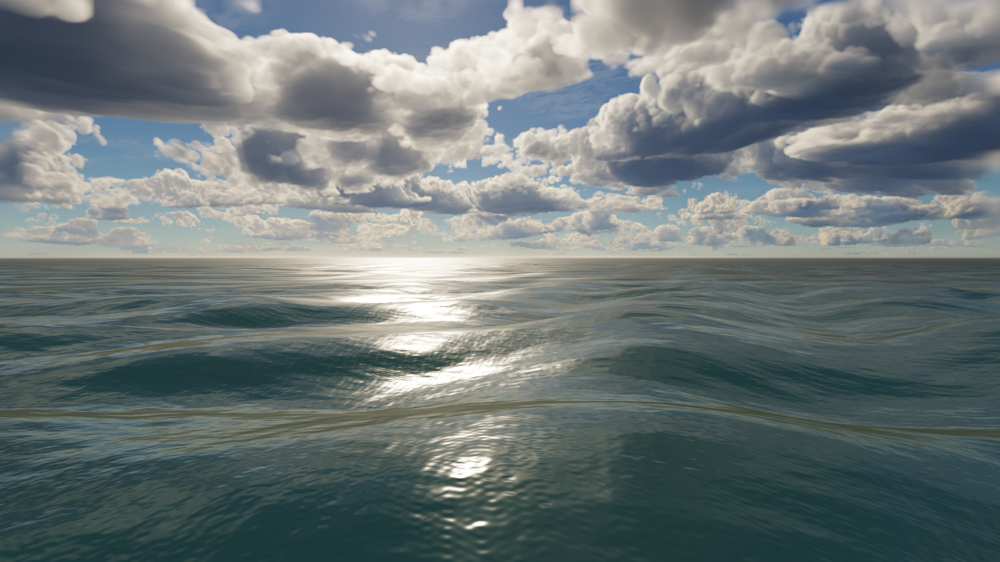
Sea of Thieves · publisher image
{kind=link}
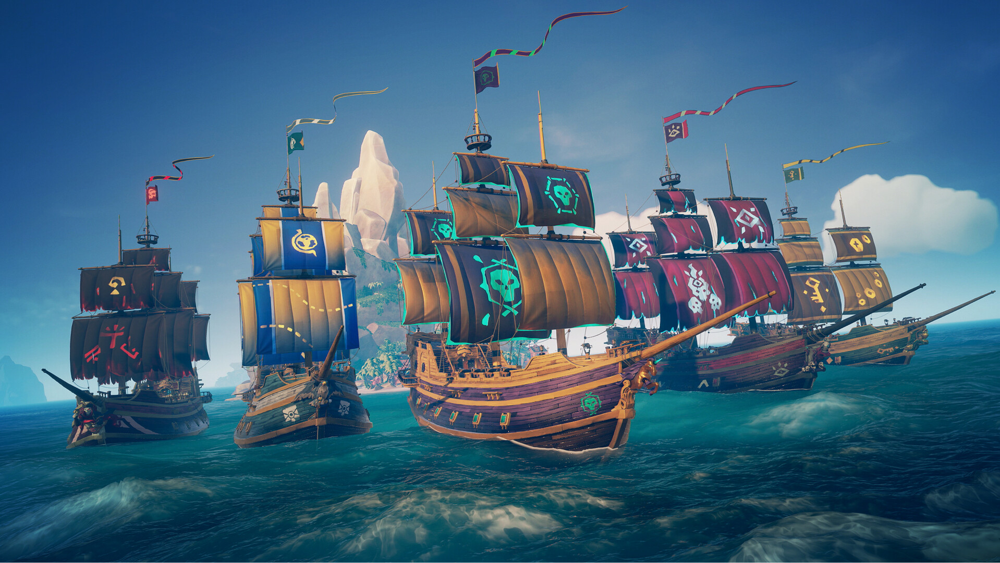
Real photograph · USGS swash zone
{kind=link}
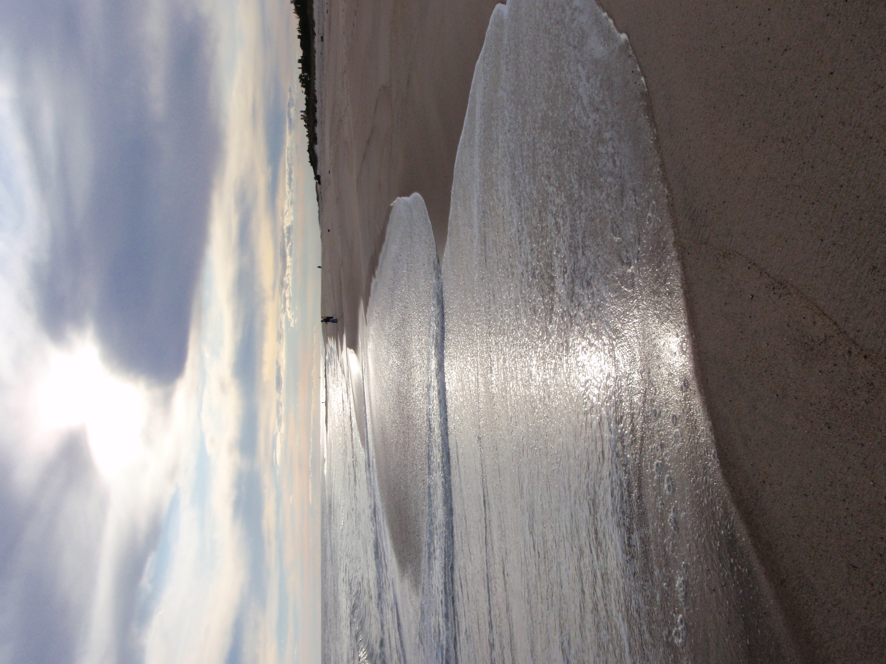
Correct crest compression, retain foam after the crest passes, and give swell and local wind independent authoring controls.
Lighting sweep
{kind=link}
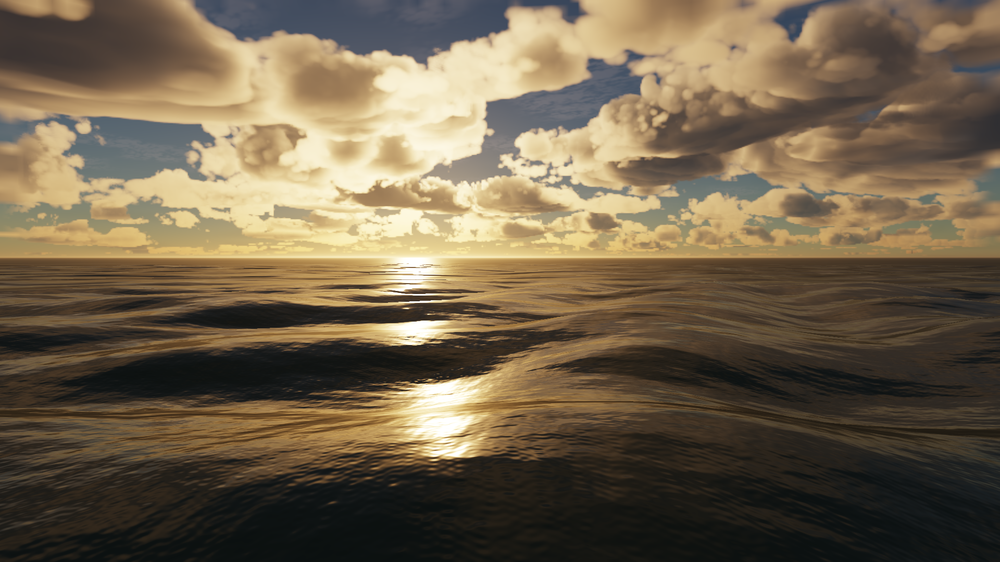
{kind=link}
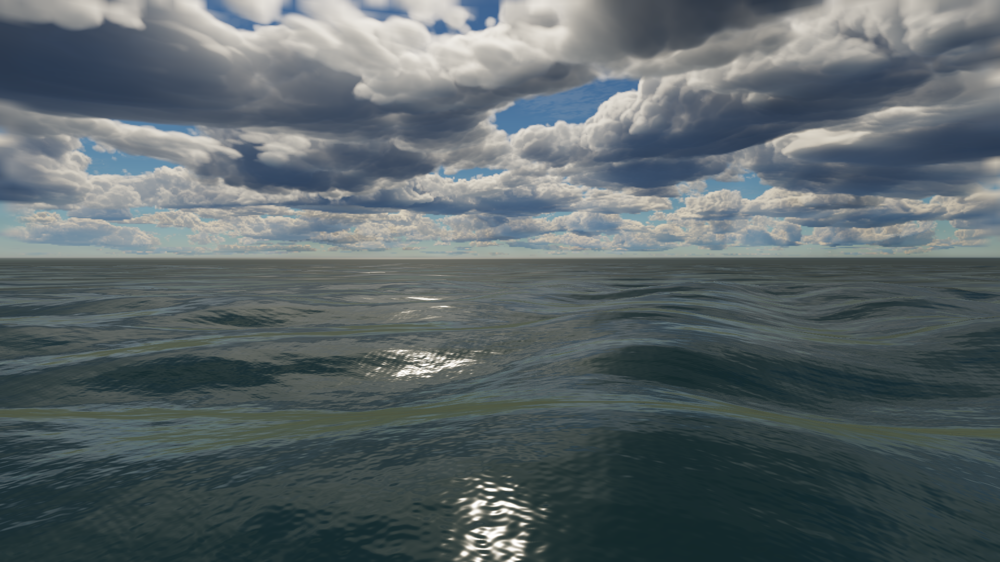
The shoreline is its own authored system
Horizon Forbidden West · coastal scene
{kind=link}
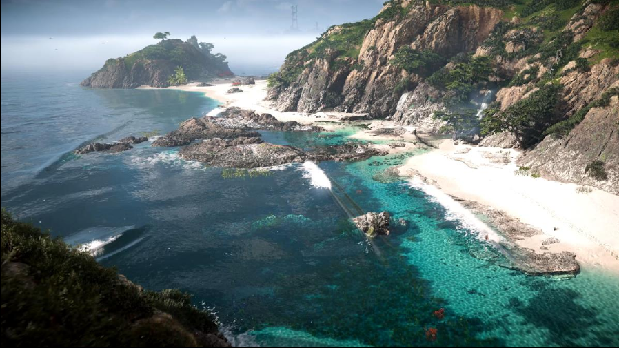
Real surf · photograph in Guerrilla talk
{kind=link}
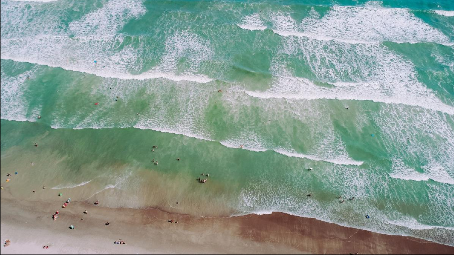
Real foam · NOAA · accumulation close-up
{kind=link}
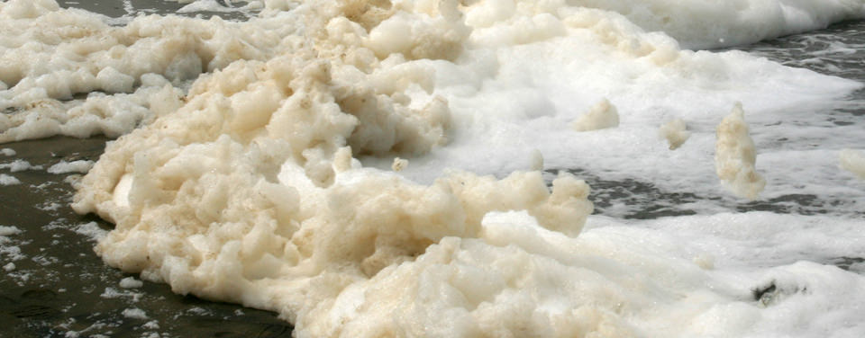
Compile shore distance, flow direction, wetness history and localized breaker geometry from the same authored bed. Use a small hero region to prove the complete effect.
A crest-compression mismatch
Our displacement expands positive crests; foam asks for compression at positive crests. A GPU-only sign reversal is shown against the unchanged baseline.
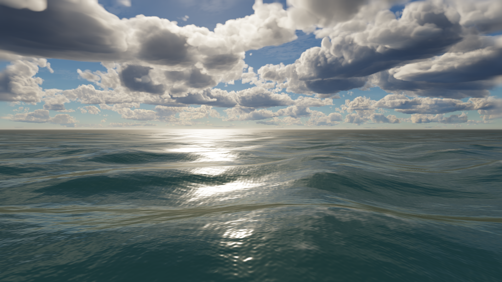
Eligibility means determinant < 0.9 and positive height, before foam strength, breakup and pixel filtering. It is not foam coverage or a quality score. The correction is necessary groundwork; the image still needs persistent foam and better crest lighting. The diagnostic leaves CPU queries unchanged and is not a shipping implementation. Probe data.
Ocean and creek have different cost profiles
Fresh 1080p balanced captures on the local Apple / Metal adapter. Each experiment uses four alternating runs with 45 warmup and 120 measured dynamic frames per run.
| Experiment | Whole-frame GPU p50 | Whole-frame GPU p95 | Estimated water median increment |
|---|---|---|---|
| Ocean | 1.57–2.10 ms | 2.82–3.87 ms | 1.11 ms |
| Creek, 128² | 12.32–12.98 ms | 16.38–17.04 ms | 5.01 ms |
| Creek, transport disabled | 12.06–12.19 ms | 14.88–16.97 ms | 4.00 ms |
Water-off controls retain the scene and fluid solver. Increment is the difference of mean medians, not a water p95. Control drift prevents attributing an exact saving to the transport ablation. These measurements do not certify low-end hardware.
First compiler savings
- Separate static bed, current state and optional history uploads.
- Classify shallow / deep / dry and reflection-relevant patches.
- Share compatible spectrum maps and omit unused features.
- Generate shore and flow products at their own needed resolution.
Then measure the tradeoffs
- Reduced-resolution optical transport with depth-aware reconstruction.
- Per-cascade wave resolution and update rate.
- Sparse spectral synthesis versus FFT at equal wave energy.
- Active fluid regions and separate temporal water history.
Current-only grid uploads would cut grid payload by two thirds. That is a concrete bandwidth opportunity; its frame-time benefit still needs measurement.